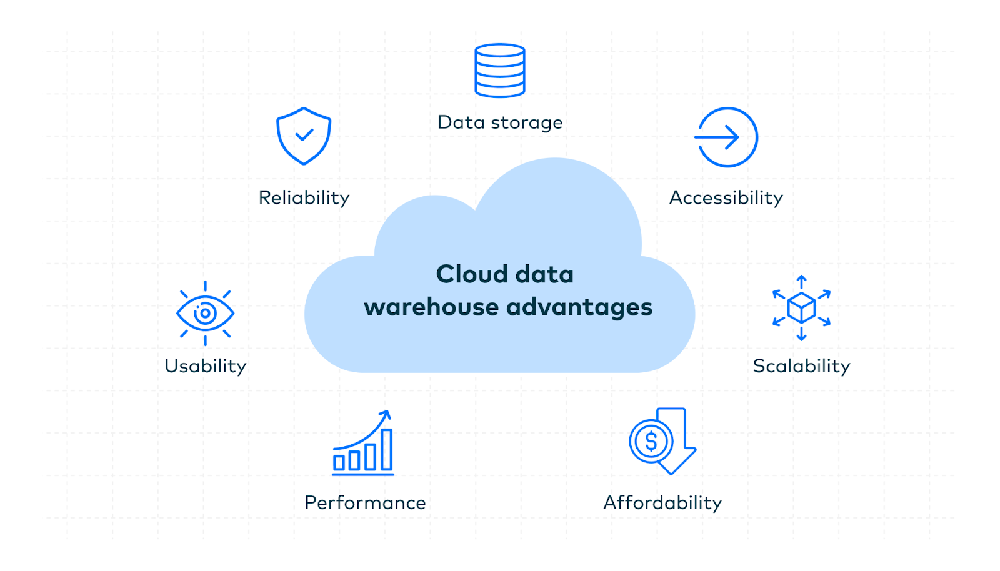
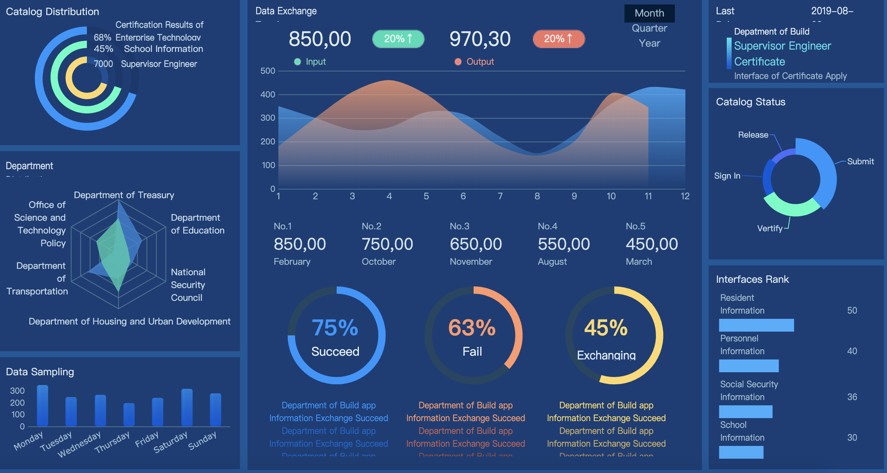
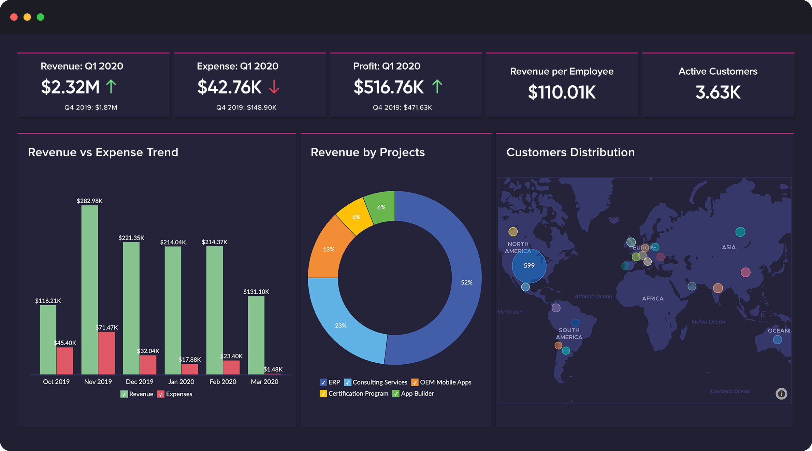

NovaSphere Analytics is a data and AI consulting company specializing in predictive analytics, cloud-based data solutions, business intelligence, and machine learning. The company helps governments, healthcare systems, and businesses optimize operations, improve decision-making, and uncover strategic opportunities through data-driven innovation.
Our Projects
Project 1: Predictive Analytics for Healthcare

Implemented a predictive analytics solution for a healthcare provider, resulting in a 20% reduction in patient readmissions.
Project 2: Cloud-Based Data Warehouse

Designed and implemented a cloud-based data warehouse for a retail company, improving data accessibility and reducing query times by 50%.
Project 3: Business Intelligence Dashboard

Developed a business intelligence dashboard for a financial services firm, enabling real-time data visualization and improving decision-making processes.
Project 4: Machine Learning for Customer Segmentation

Implemented a machine learning model for customer segmentation for an e-commerce company, resulting in a 15% increase in targeted marketing campaign effectiveness.
Our Team
John Doe - CEO
John has over 20 years of experience in the data and AI industry, leading successful projects for Fortune 500 companies.
Jane Smith - CTO
Jane is an expert in cloud computing and machine learning, with a track record of delivering innovative solutions.
Emily Johnson - Data Scientist
Emily specializes in predictive analytics and has successfully implemented models that drive business growth.
Michael Brown - Business Analyst
Michael has extensive experience in business intelligence and helps clients make data-driven decisions.
Contact Us in St. John's
Email: info@novasphereanalytics.com
Phone: +1 (709) 555-0184
Address: 123 Harbour Centre, St. John's, NL A1C 5V4, Canada